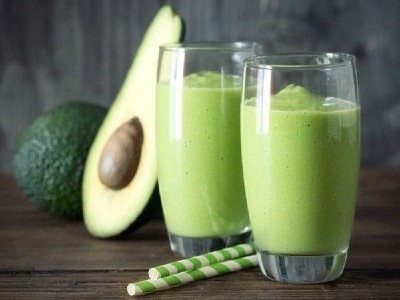

|  |
Smoothie name: Avocado smoothie▸ Ingredients:
▸ Time to prepare: 15 minutes ▸ Approx quantity: 1 medium-size cup |
▸ How to make avocado smoothie:
- Cut the avocado in half, remove the flesh.
- Then put butter, yogurt, condensed milk, small ice in a blender, and puree.
- When you see the butter thicken, turn off the machine, pour it a glass or cup and you have a delicious and nutritious avocado smoothie in the summer.
▸ Calories and related information: